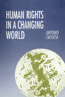

<body bgcolor="#FFFFFF" text="#000000" link="#0000FF" vlink="#CC0000" alink="#CC0000"><center><hr width="350" size="1" align="center" noshade>Examines the nature and role of human rights in the context of international relations in the modern world<hr width="350" size="1" align="center" noshade><p><a href="https://cdcshoppingcart.uchicago.edu/Cart/ChicagoBook.aspx?ISBN=9780877227465&&PRESS=temple" target="_top">Buy this book!</a> | <a href="https://cdcshoppingcart.uchicago.edu/Cart/Cart.aspx?PRESS=temple" target="_top">View Cart</a> | <a href="https://cdcshoppingcart.uchicago.edu/Cart/Cart.aspx?PRESS=temple" target="_top">Check Out</a></p><p></p></center><!--none//--><h1>Human Rights in a Changing World</h1>
<h3>Antonio Cassese</h3>
<P>cloth 0-87722-746-2 $39.95, Dec 90, <FONT COLOR=#990033>Out of Print</FONT>
<BR> 200 pp
</P><p>This book examines the nature and role of human rights in the context of international relations in the modern world. While sensitive to the ways in which doctrines of human rights can be misused by nation-states pursuing their own interests, Antonio Cassese argues that the development of human rights nonetheless represents an important advance for people worldwide.
<p>The aim of the book is to provide a global view of the field of human rights today. Cassese proceeds by a case-by-case approach, investigating certain key issues, such as crimes against humanity, genocide, torture, apartheid, and mass hunger, using these issues as a means of discussing the broader theme of human rights. Drawing on these case studies, Cassese develops a general analysis of human rights in the modern world and formulates an agenda for action, indicating what the citizens of particular states can do to ensure the practical application of human rights internationally.
<p>Written in a clear, lively, and engaging way, <I>Human Rights in a Changing World</I> will be of interest not only to students of politics, philosophy, international relations, and international law; it is a book of general interest that will appeal to a wide readership.
<BR>&nbsp;<h2>Contents</h2><P>
<p>Introduction
<p><b>Part I: A Decalogue for Five Billion Persons</b>
<br>1. The Emergence of Human Rights on to the World Stage
<br>2. The Universal Declaration of Human Rights Forty Years On
<br>3. Are Human Rights Truly Universal?
<p><b>Part II: The Great Outrages against Humanity</b>
<br>4. how Does the International Community React to Genocide?
<br>5. The Savage States: Torture in the 1980s
<br>6. Descent into Hell: Notes on Apartheid
<br>7. The 'Forced Disappearances' In Argentina: Barbarism and After
<br>8. A 'Contribution' by the West to the Struggle against Hunger: The Nestl� Affair
<p><b>Part III: Human Rights in a Gradually Unifying World</b>
<br>9. The Value of Human Rights in the Contemporary World
<br>10. The Impact of Human Rights on the International Community
<br>11. What Should We Do?
<p>Appendix A: The Universal Declaration of Human Rights (1948)
<br>Appendix B: The Main International Organization Active in the Field of Human Rights: A Practical Guide
<br>Notes
<br>Select Bibliography
<br>Index
</P><BR>&nbsp;<H2>About the Author(s)</H2>
<P><b>Antonio Cassese</b> is Professor or Law at the European University Institute in Italy and editor of <I>The Tokyo Trial and Beyond: Reflections of a Peacemonger by B.V.A. Roling</I> (Temple).</P>
<BR><H2>Subject Categories</H2>
<p><A HREF="/tempress/law.html" TARGET="_top">Law and Criminology</a>
</p>
<p align="center"><a href="https://cdcshoppingcart.uchicago.edu/Cart/ChicagoBook.aspx?ISBN=9780877227465&&PRESS=temple" target="_top">Buy this book!</a> | <a href="https://cdcshoppingcart.uchicago.edu/Cart/Cart.aspx?PRESS=temple" target="_top">View Cart</a> | <a href="https://cdcshoppingcart.uchicago.edu/Cart/Cart.aspx?PRESS=temple" target="_top">Check Out</a></p><p><font face="Arial" size="1"><a href="copyright.html" onMouseOver="window.status='Web Copyright Policy';return true;" onMouseOut="window.status=''" title="Web Copyright Policy">&copy;</a> 2015 <a href="http://www.temple.edu" target="new" onMouseOver="window.status='Link to Temple University home page';return true;" onMouseOut="window.status=''" title="Link to Temple University home page">Temple University</a>. All Rights Reserved. http://www.temple.edu/tempress/titles/829_reg.html</font></p>